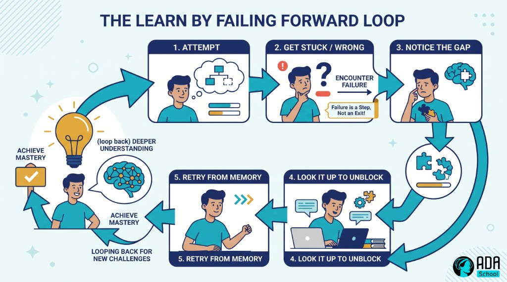
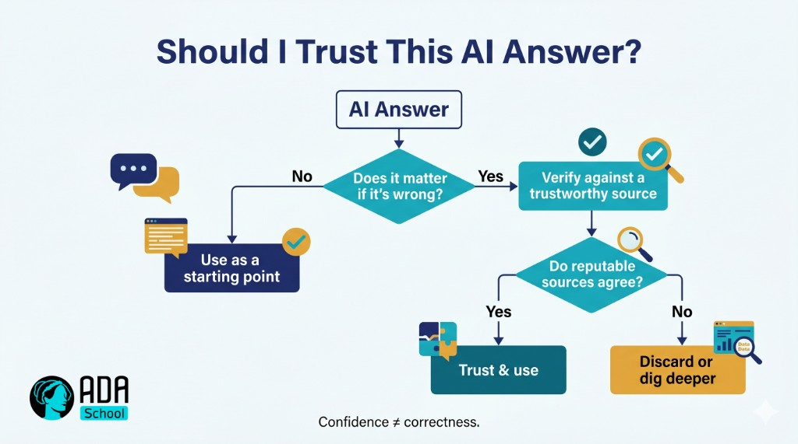
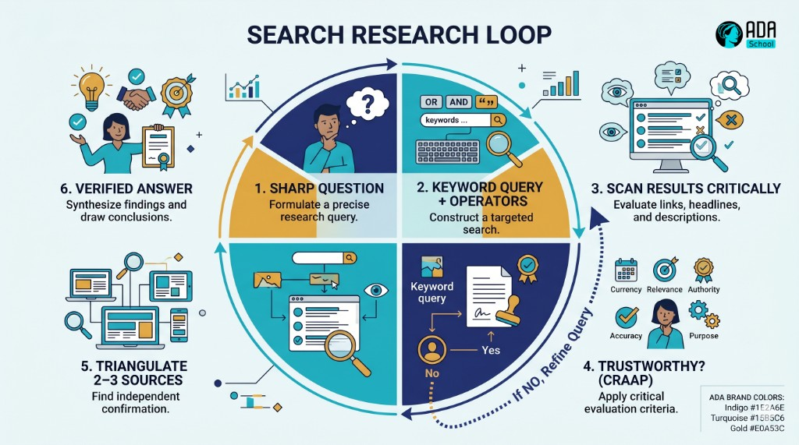
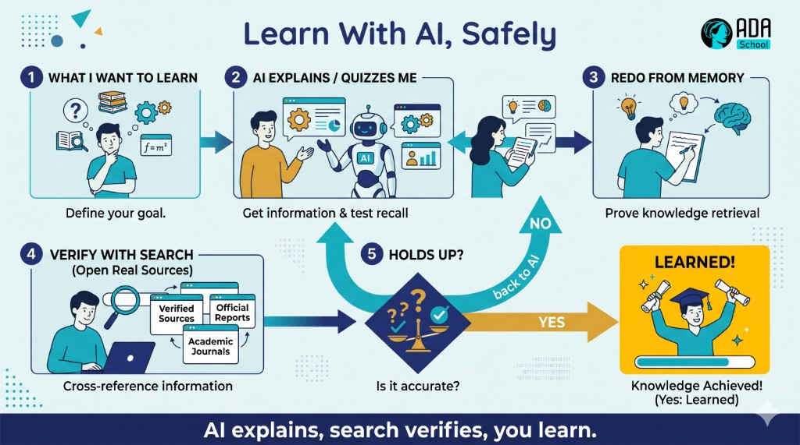

🧭 Worked Example — Self-Learning Micro-Credential (full course)
A complete, ready-to-run ADA micro-credential for the most foundational skill of all: learning how to learn — online, with AI, and on your own. It is a fully populated example built end-to-end with the ADA Methodology (KSA + 4 phases + learning-atom topology): every atom has real reading text, curated videos, Mermaid diagrams, image-generation prompts, hands-on research and prompting drills, and rubrics.
🖥️ See it live: open course.html in any browser for an interactive, navigable version of this course (sidebar, progress, embedded videos, diagrams, copyable prompts).
This is the course that makes every other course optional: once you can learn independently, you can acquire any future skill. It deliberately teaches that the process of reaching an answer matters more than the answer, that failing is data, not defeat, how to research with search engines and learn with AI, and — importantly — the limitations of LLMs so you never trust them blindly. It complements Growth Mindset (the belief that drives learning) and Effective Communication.
Conforms to ../../specs/micro-credential-v2-schema.md · modalities from ../../specs/learning-atom-topology.md · KSA from ../../specs/ksa-taxonomy.md.
🧭 What this teaches
The half-life of any specific skill keeps shrinking; the ability to teach yourself the next thing is what lasts. This course makes self-learning concrete and certifiable: learners build a working model of how learning actually happens (effort, struggle, and productive failure are features, not bugs), learn to find trustworthy answers with search engines, learn with AI through basic prompting while understanding where LLMs fail, and run a real self-directed learning loop that they finish by teaching what they learned.
| Title | Self-Learning: Learn Anything Online & with AI |
| Duration | ~10 hours · 2–3 weeks |
| Primary KSA | 🛠️ Skill — research with search and learn with AI, plus the 🌱 Abilities (curiosity, resilience) that sustain them |
| Target competency | O*NET process skills: Active Learning (2.A.2.a), Learning Strategies (2.A.2.b), Critical Thinking (2.A.2.c) · ESCO transversal "learn to learn", "manage one's own learning" · DigComp 1 Information & data literacy |
| Badge | 🏅 Self-Directed Learner |
| Prerequisites | None. Internet access and a free AI chat tool (e.g. an LLM assistant) to practice with. |
📚 Course contents
| # | File | What it is |
|---|---|---|
| — | micro-credential.md | The full micro-credential spec (YAML schema, objectives, KSA map, phase planner) |
| 1 | atoms/atom-1-how-learning-works.md | 🙉 P1 · 🧠 K — How learning works: the process > the answer; learn by failing |
| 2 | atoms/atom-2-trust-sources-and-how-ai-works.md | 🙉 P1 · 🧠 K — Trustworthy sources & how AI really works (LLM limits) |
| 3 | atoms/atom-3-research-with-search.md | 🙈 P2 · 🛠️ S — Research with search engines (Google) & triangulating sources |
| 4 | atoms/atom-4-learn-with-ai.md | 🙊 P3 · 🛠️ S — Learn with AI: basic prompts to explain anything + verify |
| 5 | atoms/atom-5-self-learning-loop.md | 🙊 P3 · 🛠️ S + 🌱 A — The self-learning loop: learn by failing forward |
| 6 | atoms/atom-6-capstone-learn-something-new.md | 🐵 P4 · 🛠️ S + 🌱 A — Capstone: teach yourself something new & teach it back |
| — | capstone.md | Capstone brief + how it maps to KSA |
| — | rubrics.md | All rubrics (knowledge-mini, skill, behavioral, capstone-5) |
| — | skills-map.md | Badge → skills map and how it powers every other pathway |
🤝 Practiced for real: the Abilities (curiosity, resilience-through-failure) are assessed behaviorally across ≥3 occasions (never a quiz), and the capstone ends in a peer teach-back.
🔄 Phase journey
🤖 How it was authored (and how to reuse it)
This course follows the Gen AI authoring workflow in ../../specs/genai-authoring-workflow.md: competency → KSA → atoms → modalities → rubrics → badge. Conventions used throughout:
- 🎬 Videos are written as a
youtubeblock with the real URL + caption (the interactive site
embeds them as a click-to-play player).
- 🖼️ Diagrams are provided two ways: a live Mermaid diagram and a reusable
image-generation prompt in a prompt block.
- ✅ Activities include search drills, prompt scripts, checklists, and rubrics so the course is
self-paced and practicable.
⚠️ Human-in-the-loop (methodology guardrail): the links and references below are curated starting points — a mentor/instructor should verify each one before delivery. And the whole point of Atoms 2 & 4 is that AI output is never authoritative on its own: always verify against trustworthy sources. See ../../CLAUDE.md §5.🎓 Micro-Credential — Self-Learning: Learn Anything Online & with AI
The full specification for this micro-credential. It conforms to ../../specs/micro-credential-v2-schema.md.
YAML front matter
yamlschema: ada-microcredential/v2
id: mc-self-learning
title: "Self-Learning: Learn Anything Online & with AI"
language: en
duration_hours: 10
level: beginner
status: published
license: CC-BY-SA-4.0
mentors: ["@sancarbar"]
target_roles:
- role: "Any role and any learner — self-learning is the meta-skill that underpins every other credential and a lifelong career"
framework_ref: >
O*NET process skills: 2.A.2.a Active Learning, 2.A.2.b Learning Strategies, 2.A.2.c Critical Thinking ·
ESCO transversal: "learn to learn", "manage one's own learning", "process information" ·
DigComp 2.2 area 1: Information & data literacy (browsing/searching, evaluating data & information)
ksa:
- { id: K-learning-process, type: knowledge, label: "How learning works: the process beats the answer; struggle & productive failure; metacognition", target_level: 2, bloom: understand }
- { id: K-sources-and-ai-limits, type: knowledge, label: "Evaluating trustworthy sources, and how LLMs work + their limitations (hallucination, no live data, bias, confidence ≠ correctness)", target_level: 2, bloom: understand }
- { id: S-search-research, type: skill, label: "Research with search engines: craft queries, use operators, triangulate trustworthy sources", target_level: 2, bloom: apply, primary: true }
- { id: S-learn-with-ai, type: skill, label: "Learn with AI: basic prompting to explain anything, ask for sources, and verify the output", target_level: 2, bloom: apply, primary: true }
- { id: S-learning-loop, type: skill, label: "Run a self-directed learning loop: goal → resources → practice → self-test → reflect", target_level: 2, bloom: apply }
- { id: A-curiosity, type: ability, label: "Curiosity & learner agency: ask questions and drive your own learning", target_level: 2, affective_stage: value, assessed_occasions: 3 }
- { id: A-resilience-failure, type: ability, label: "Resilience: treat being stuck/wrong as data and persist (learn by failing forward)", target_level: 2, affective_stage: respond, assessed_occasions: 3 }
atoms:
- { id: atom-1, title: "How learning works (process > answer)", ksa_refs: [K-learning-process], phase: 1, modalities: [{dimension: read, subtype: Article}, {dimension: watch, subtype: Video Explainer}, {dimension: see, subtype: Mental Model}, {dimension: evaluate, subtype: Pop Quiz}], rubric: knowledge-mini }
- { id: atom-2, title: "Trustworthy sources & how AI really works", ksa_refs: [K-sources-and-ai-limits], phase: 1, modalities: [{dimension: read, subtype: Article}, {dimension: see, subtype: Framework}, {dimension: practice, subtype: Worksheet / Exercise}, {dimension: evaluate, subtype: Pop Quiz}], rubric: knowledge-mini }
- { id: atom-3, title: "Research with search engines", ksa_refs: [S-search-research], phase: 2, modalities: [{dimension: watch, subtype: Video Explainer}, {dimension: see, subtype: Diagram}, {dimension: practice, subtype: Challenge / Quest}, {dimension: evaluate, subtype: Performance Task}], rubric: skill }
- { id: atom-4, title: "Learn with AI (basic prompting + verify)", ksa_refs: [S-learn-with-ai, K-sources-and-ai-limits], phase: 3, modalities: [{dimension: read, subtype: Technical Article}, {dimension: practice, subtype: AI Prompt Question}, {dimension: practice, subtype: Worksheet / Exercise}, {dimension: evaluate, subtype: Performance Task}], rubric: skill }
- { id: atom-5, title: "The self-learning loop (learn by failing forward)", ksa_refs: [S-learning-loop, A-curiosity, A-resilience-failure], phase: 3, modalities: [{dimension: practice, subtype: Project / Quest}, {dimension: practice, subtype: Reflection / Learning Log}, {dimension: collaborate, subtype: Pair Programming}, {dimension: evaluate, subtype: Behavioral Assessment}], rubric: behavioral }
- { id: atom-6, title: "Capstone: teach yourself something new & teach it back", ksa_refs: [S-search-research, S-learn-with-ai, S-learning-loop, A-curiosity, A-resilience-failure], phase: 4, modalities: [{dimension: practice, subtype: Project / Quest}, {dimension: collaborate, subtype: Showcase / Demo Day}, {dimension: collaborate, subtype: Async Peer Review}, {dimension: evaluate, subtype: Capstone Project}], rubric: capstone-5 }
capstone:
title: "Teach yourself a new micro-skill using online + AI + search, document the process (incl. failures), and teach it back"
integrates_ksa: [K-learning-process, K-sources-and-ai-limits, S-search-research, S-learn-with-ai, S-learning-loop, A-curiosity, A-resilience-failure]
rubric: capstone-5
badge:
name: "Self-Directed Learner"
evidence_required: ["atom-3", "atom-4", "atom-5", "capstone"]
issued_on: verified-evidence
🎯 Target job competency
Learn independently and continuously. Employers increasingly hire for learning agility — the capacity to pick up new tools, domains, and problems without being formally taught. This credential makes that hireable: the learner can find trustworthy answers online, use AI as a study partner (without being misled by it), and run a disciplined self-learning loop. Mapped to O*NET process skills (Active Learning, Learning Strategies, Critical Thinking), ESCO "learn to learn", and DigComp area 1 (information & data literacy).
🧬 KSA breakdown — the meta-skill, taught the right way
| KSA | Component | Why this type | Target |
|---|---|---|---|
| 🧠 Knowledge | How learning works (process > answer; productive failure) | A mental model that reframes struggle as learning | L2 |
| 🧠 Knowledge | Trustworthy sources & LLM limits | You can't verify what you don't understand | L2 |
| 🛠️ Skill | Research with search engines | A trainable technique (queries, operators, triangulation) | L2 |
| 🛠️ Skill | Learn with AI (+ verify) | Basic prompting paired with verification | L2 |
| 🛠️ Skill | The self-learning loop | A repeatable procedure for any new topic | L2 |
| 🌱 Ability | Curiosity & learner agency | A disposition shown across situations, over time | L2 |
| 🌱 Ability | Resilience (learn by failing) | A habit of persisting through being stuck/wrong | L2 |
Why this shape: self-learning is mostly doing (Skills: search, prompt, loop), but it only sticks when paired with the Abilities that drive it — curiosity (to keep asking) and resilience (to keep going when you fail). Those Abilities are assessed behaviorally, across ≥3 occasions, never with a quiz.
📘 Learning objectives (Bloom + KSA)
| Objective | Bloom | KSA | Component | Target |
|---|---|---|---|---|
| Explain why the process of reaching an answer matters more than the answer, and how failure aids learning | Understand | 🧠 K | K-learning-process | L2 |
| Evaluate whether a source is trustworthy and explain basic LLM limitations | Understand/Evaluate | 🧠 K | K-sources-and-ai-limits | L2 |
| Find and triangulate trustworthy answers using a search engine | Apply | 🛠️ S | S-search-research | L2 |
| Prompt an AI to explain a topic, request sources, and verify the result | Apply | 🛠️ S | S-learn-with-ai | L2 |
| Run a full self-learning loop on a chosen topic | Apply | 🛠️ S | S-learning-loop | L2 |
| Drive your own learning with curiosity across multiple situations | Value (affective) | 🌱 A | A-curiosity | L2 |
| Persist and adapt when stuck or wrong, treating failure as data | Respond (affective) | 🌱 A | A-resilience-failure | L2 |
🔍 Phase planner
| Phase | Atom(s) | KSA focus | Activity | Assessment |
|---|---|---|---|---|
| 🙉 1 · hear | Atom 1, 2 | 🧠 K | reading + video on how learning works; source-trust + LLM-limits worksheet | knowledge-mini (pop quizzes) |
| 🙈 2 · see | Atom 3 | 🛠️ S | search techniques modeled; a research scavenger hunt | performance task |
| 🙊 3 · do | Atom 4, 5 | 🛠️ S + 🌱 A | AI study prompts + verification; a real learn-by-failing micro-project | performance task + behavioral assessment |
| 🐵 4 · share | Atom 6 (capstone) | 🛠️ S + 🌱 A | teach yourself a new skill; document the messy middle; teach back | capstone-5 |
🚀 Capstone & 📊 assessment
Full brief in capstone.md; all rubrics in rubrics.md. In short: formative pop quizzes for the Knowledge atoms, a skill performance task for search and for AI-assisted learning, a behavioral assessment across occasions for the Abilities, and a self-taught skill + learning log + teach-back graded on the standard 5-criteria capstone rubric. The badge → skills-map mapping is in skills-map.md.
🎓 Outcomes & recognition
- A reframed relationship with effort and failure: struggle is learning, not a sign you're failing.
- The ability to find trustworthy answers online and triangulate them.
- The ability to learn with AI as a study partner — and to catch it when it's wrong.
- A repeatable self-learning loop you can point at any new skill.
- A portfolio artifact: a self-taught micro-skill + a learning log that shows the process (including
the failures and how you recovered).
- LinkedIn-compatible digital badge: 🏅 Self-Directed Learner — the meta-credential that makes
every other pathway faster.
⚛ Learning Atom 1 — How Learning Works (Process > Answer)
Phase: 🙉 1 · Self-Guided Introduction (hear) · KSA: 🧠 Knowledge · Target level: L2 · Component id: K-learning-process
🎯 Learning objective
- Explain why the process of reaching an answer matters more than the answer itself, and **how
struggle and failure drive learning.**
🧩 Prerequisites
- None. Bring one thing you tried to learn and found hard.
🧭 Atom description
Most people think learning means getting the right answer fast. That belief quietly sabotages them: they copy the answer, feel productive, and learn nothing. This atom rewires that. You'll see that the effortful process — struggling, getting it wrong, retrieving from memory — is where the learning actually happens. Get this, and the rest of the course (search, AI, the loop) becomes a way to make the process better, not a shortcut around it.
📖 Reading — The answer is the by-product; the process is the point (≈ 7 min)
Imagine two students. One watches a worked solution and nods along — it all makes sense. The other wrestles with the problem, gets stuck, tries three wrong things, then finally cracks it. The first feels like they learned more (it was smooth). The second actually did. This is one of the most robust findings in the science of learning: the conditions that make learning feel hard are often the ones that make it stick. Researchers call these desirable difficulties.
Three ideas to internalize:
- Process over answer. The answer is disposable — tomorrow's problem is different. What transfers
is how you got there: the questions you asked, the dead ends you ruled out, the method you built. When you copy an answer, you keep the answer and throw away the learning.
- Productive failure. Being wrong isn't the opposite of learning — it's part of it. A wrong
attempt tells you exactly where your model of the world is broken, which is the precise spot to fix. Studies on productive failure (Kapur) show learners who struggle before being shown the solution understand it more deeply than those shown first. Fail → notice the gap → close it.
- Metacognition (thinking about your thinking). Good learners constantly ask: *What do I actually
understand? Where am I confused? What will I try next?* This self-monitoring is what turns effort into progress instead of spinning.
Two traps to avoid:
- The fluency illusion. Re-reading and highlighting feel like learning but mostly create
familiarity, not memory. Retrieval (closing the book and trying to recall/explain) and spacing (revisiting over days) are far stronger — even though they feel harder.
- Answer-seeking. Jumping straight to "just tell me the answer" (from a person, Google, or an AI)
skips the struggle that builds understanding. Use answers to check and unblock, not to replace the attempt. Try first, then look.
Reframe for the whole course: when something is hard, you are not failing at learning — you are doing learning. The discomfort is the sensation of your brain changing.
Key takeaways
- The process of reaching an answer is what transfers; the answer is disposable.
- Failure is data — it pinpoints exactly what to fix (productive failure).
- Retrieval + spacing beat re-reading, even though they feel harder (desirable difficulties).
- Metacognition — ask what you understand and what to try next.
- Try first, then look — use answers to check/unblock, not to skip the struggle.
🎬 Watch — learning how to learn (pick one, ~10–17 min)
🖼️ See — the learn-by-failing loop

🖼️ Generated image — produced from the prompt below.
A reusable prompt to generate an on-brand version of this diagram:
Create a clean, modern educational infographic of a "learn by failing forward" loop: Attempt → Get
stuck/wrong → Notice the gap → Look it up to unblock → Retry from memory → (loop back) deeper
understanding. Emphasize that failure is a step in the loop, not an exit. Use ADA brand colors (Indigo
#1E2A6E, Turquoise #15B5C6, Gold #E0A53C accents) on a light background, flat vector style, legible
sans-serif, no text errors. 16:9.✅ Evaluate — Pop quiz (formative, knowledge-mini)
- Why can copying a correct answer leave you having learned almost nothing?
- What is "productive failure," and why does it help?
- Name a study habit that feels effective but mostly creates an illusion of learning — and what to
do instead.
Answer key
- Because the learning is in the process of reaching the answer (the questions, dead ends, and
method) — copying keeps the disposable answer and throws away the transferable process.
- Struggling/being wrong before seeing the solution; it exposes exactly where your understanding
is broken, so the later explanation lands deeper.
- Re-reading/highlighting (the fluency illusion) → instead use retrieval practice (recall
from memory) and spacing (revisit over days).
📦 Deliverable
- Pick something you recently "learned" by copying an answer. In 4–6 sentences, describe how you'd
re-learn it using try-first + retrieval, and what gap your earlier shortcut hid.
🧠 Final reflection
- When learning feels uncomfortable, what's your usual reaction? How could you reinterpret that
discomfort after this atom?
🔗 Sources to verify (human-in-the-loop)
- Brown, Roediger & McDaniel, Make It Stick: The Science of Successful Learning.
- Bjork & Bjork, Making Things Hard on Yourself, but in a Good Way (desirable difficulties).
- Kapur, Productive Failure (research papers).
- Oakley, A Mind for Numbers / "Learning How to Learn" (Coursera).
🧩 Connections
- Successors: Atom 2 (where to get trustworthy answers), Atom 5 (the loop, in practice).
⚛ Learning Atom 2 — Trustworthy Sources & How AI Really Works
Phase: 🙉 1 · Self-Guided Introduction (hear) · KSA: 🧠 Knowledge · Target level: L2 · Component id: K-sources-and-ai-limits
🎯 Learning objective
- Evaluate whether a source is trustworthy, and **explain — at a basic level — how LLMs work and
where they fail.**
🧩 Prerequisites
- Atom 1. The mindset of "try first, then verify" carries straight into this atom.
🧭 Atom description
Self-learning online means swimming in information of wildly different quality — and now, in confident answers from AI that may simply be wrong. Before you research (Atom 3) or learn with AI (Atom 4), you need a basic radar for what to trust and an honest picture of what an LLM actually is. This is the safety briefing for everything that follows.
📖 Reading — Trust, but verify — especially the confident robot (≈ 8 min)
Part A — Is this source trustworthy? A quick checklist (one version is the CRAAP test):
- Currency — How recent is it? Does recency matter for this topic (it does for tech/medicine,
less for history)?
- Relevance — Does it actually answer your question, at the right depth?
- Authority — Who wrote it, and what makes them credible? An expert, institution, or peer-reviewed
outlet beats an anonymous blog or a random forum post.
- Accuracy — Is it supported by evidence and consistent with other reputable sources? Can you
trace its claims?
- Purpose — Why does this exist? To inform, to sell, to persuade? Watch for bias and incentives
(e.g., a "study" funded by the company it flatters).
A source hierarchy (rough, not absolute): peer-reviewed research & official documentation > reputable institutions (universities, established news, standards bodies) > expert practitioners & well-sourced explainers > anonymous blogs/forums > random social posts. Triangulate: trust a claim more when two or three independent, reputable sources agree. Primary sources (the original paper, the official docs) beat someone's summary of them.
Part B — How an LLM actually works (basic). A large language model (the thing behind AI chat) is, underneath, a very sophisticated next-word predictor. It was trained on huge amounts of text and learned the statistical patterns of language. When you ask it something, it generates the most likely sounding continuation — word by word. It is not looking up facts in a database, and it has no understanding or intent; it produces text that resembles a correct answer.
That design creates specific, important limitations:
- Hallucination. It can state false things — fake facts, fake citations, fake quotes — **fluently
and confidently.** Plausible ≠ true. This is the single most important thing to remember.
- Confidence ≠ correctness. Its certainty in tone tells you nothing about whether it's right.
It will be just as smooth when wrong as when right.
- Knowledge cutoff / no live data. A base model only "knows" up to its training date and doesn't
truly browse the live web (unless a specific tool gives it that, and even then, verify).
- Bias & gaps. It reflects biases and blind spots in its training data; it can be confidently
Western-centric, outdated, or simply ignorant of niche topics.
- No real sources by default. If it offers citations, they may be invented. Always check that a
cited source exists and actually says what's claimed.
- You steer it. It often agrees with you (sycophancy) and follows leading questions. Garbage or
biased prompts in → biased answers out.
The golden rule for the rest of this course: treat an LLM like a fast, confident, sometimes wrong study partner — brilliant for explaining, brainstorming, and getting unstuck, never the final word. Verify anything that matters against a trustworthy source.
Key takeaways
- Vet sources with CRAAP (Currency, Relevance, Authority, Accuracy, Purpose) and triangulate.
- An LLM is a next-word predictor — it has no understanding and isn't a fact database.
- It can hallucinate confidently; confidence ≠ correctness.
- Mind the knowledge cutoff, bias, and fake citations — verify against real sources.
🖼️ See — verify-the-AI flow

🖼️ Generated image — produced from the prompt below.
A reusable prompt to generate an on-brand version:
Create a clean, modern decision-tree infographic titled "Should I Trust This AI Answer?". Branch:
"Does it matter if it's wrong?" → No: "Use as a starting point" / Yes: "Verify against a trustworthy
source" → "Do reputable sources agree?" → Yes: "Trust & use" / No: "Discard or dig deeper". Add a
small caption: "Confidence ≠ correctness." Use ADA brand colors (Indigo #1E2A6E, Turquoise #15B5C6,
Gold #E0A53C), light background, flat vector, legible sans-serif. 16:9.🧪 Practice — Source & AI-claim audit
- Source triage. Take a question you care about and find three sources (e.g., a research/official
page, a reputable explainer, a random blog/forum). Score each with CRAAP and rank them.
- Catch a hallucination. Ask an AI something specific and checkable (a date, a citation, a niche
fact). Then verify each claim against a trustworthy source. Note anything that was confidently wrong or unverifiable.
What good looks like
- You can articulate why one source outranks another (authority + accuracy + purpose).
- You found at least one AI claim you couldn't verify — or proved one wrong — and you didn't take its
confidence as evidence.
✅ Evaluate — Pop quiz (formative, knowledge-mini)
- What does each letter of CRAAP stand for, and what does "triangulate" mean?
- In one sentence, what is an LLM actually doing when it answers?
- Why is "the AI sounded very confident" not a reason to trust an answer?
Answer key
- Currency, Relevance, Authority, Accuracy, Purpose. Triangulate = confirm a
claim across multiple independent, reputable sources.
- Predicting the most likely next words based on patterns in its training data — not looking up
verified facts.
- Because LLMs generate confident-sounding text whether right or wrong — confidence ≠ correctness,
and they can hallucinate.
📦 Deliverable
- Your source-triage ranking (3 sources + CRAAP notes) and one documented AI claim you verified or
debunked, with the trustworthy source you checked against.
🧠 Final reflection
- Where have you previously trusted a source (or an AI answer) you shouldn't have? What's your new rule?
🔗 Sources to verify (human-in-the-loop)
- CSU/Meriam Library — The CRAAP Test (source evaluation).
- DigComp 2.2 — competence area 1: Information & data literacy.
- Plain-language explainers on how LLMs work and why they hallucinate (verify currency before use).
🧩 Connections
- Predecessor: Atom 1. Successors: Atom 3 (search for trustworthy sources), Atom 4 (use AI
safely with verification).
⚛ Learning Atom 3 — Research with Search Engines
Phase: 🙈 2 · Visual Exploration (see) · KSA: 🛠️ Skill · Target level: L2 · Component id: S-search-research
🎯 Learning objective
- Find and triangulate trustworthy answers to a real question using a search engine (e.g., Google)
— crafting good queries, using operators, and reading critically.
🧩 Prerequisites
- Atom 2 (source trust) — searching is only useful if you can judge what you find.
🧭 Atom description
Search is the most-used learning tool on earth, and almost everyone uses it at 20% of its power. This atom turns "typing a question and clicking the first link" into a deliberate research skill: ask a sharp query, use a few operators to cut noise, scan results critically, and triangulate across sources. It's in Phase 2 (see) because you learn it by watching it modeled, then doing a hunt.
🎬 Watch — searching like a pro (~5–10 min)
📖 Reading — Ask a better question, get a better answer (≈ 7 min)
1) Craft the query. The search box rewards precision:
- Use keywords, not full sentences. Drop filler words; keep the meaningful terms. `python list vs
tuple difference beats what is the difference between a list and a tuple in python please`.
- Add context that narrows it: the year, the version, the platform, the domain — `react useEffect
cleanup 2025, excel xlookup vs vlookup`.
- Speak the source's language. Think about the words an expert page would use, not how a beginner
phrases it. Searching the answer's vocabulary finds better pages.
- Iterate. Your first query is a probe. Read the snippets, steal better terms from them, and
refine. Research is a loop, not one shot.
2) Use a few high-leverage operators:
| Operator | Does | Example |
|---|---|---|
"exact phrase" | Forces an exact match | "productive failure" learning |
site: | Search within one site | site:docs.python.org enumerate |
-word | Excludes a term | jaguar speed -car |
filetype: | Find a file type | machine learning basics filetype:pdf |
OR | Either term | bicycle OR cycling commuting |
intitle: / * | In the title / wildcard | intitle:tutorial docker · "learn * in 30 days" |
3) Read the results critically. Don't auto-click result #1 (it's often an ad or SEO bait). Scan several snippets, prefer sources that pass the Atom-2 trust test (official docs, reputable institutions, well-sourced explainers), and open a few in parallel to compare. Watch the date.
4) Triangulate & trace. For anything important, confirm it across 2–3 independent reputable sources and try to reach the primary source (the original docs/paper), not a copy of a copy. If sources disagree, that disagreement is itself information — dig into why.
5) Know when to switch tools. Search is best for finding trustworthy sources and current/specific facts; AI (Atom 4) is best for explaining and synthesizing. Strong self-learners bounce between them: search to find and verify, AI to understand — then verify the AI with search again.
Key takeaways
- Query with precise keywords + context, in the source's vocabulary; then iterate.
- A few operators (
"...",site:,-,filetype:) cut noise fast. - Don't trust result #1 by default — scan, compare, check dates.
- Triangulate across 2–3 reputable sources and reach the primary source.
🖼️ See — the research loop

🖼️ Generated image — produced from the prompt below.
A reusable prompt to generate an on-brand version:
Create a clean, modern infographic of a "search research loop": Sharp question → Keyword query +
operators → Scan results critically → Trustworthy? (CRAAP) → (loop back if no) → Triangulate 2–3
sources → Verified answer. Use ADA brand colors (Indigo #1E2A6E, Turquoise #15B5C6, Gold #E0A53C),
light background, flat vector, legible sans-serif. 16:9.🧪 Practice — Research scavenger hunt (Challenge / Quest)
Answer each with a search engine, and for each record: your final query, the operator(s) used, your two trustworthy sources, and the answer.
- Find the official documentation page for a tool you use (use
site:), not a third-party copy. - Find a PDF report from a reputable institution on a topic you care about (use
filetype:pdf). - Find the exact origin of a popular quote — is it correctly attributed? (use
"exact phrase"). - Find the current recommended way to do something that changed recently (add a year/version).
- Find a claim where two reputable sources disagree — and note why.
✅ Evaluate — Performance task (skill)
Submit your scavenger-hunt sheet. Scored on:
| Criterion | Excellent (3) | Adequate (2) | Needs work (1) |
|---|---|---|---|
| Query craft | Precise keywords + apt operators; iterates | Workable queries | Full-sentence, no refinement |
| Source quality | Reaches primary/reputable sources | Mostly decent sources | First link / low quality |
| Triangulation | Confirms across independent sources | Some cross-checking | Single source |
| Critical reading | Notes dates, bias, disagreement | Some critique | Takes results at face value |
Pass = 2+ each → L2 evidence for S-search-research.
📦 Deliverable
- Your completed scavenger-hunt sheet (queries + operators + sources + answers).
🧠 Final reflection
- Which operator or habit will most change how you search day-to-day? Why?
🔗 Sources to verify (human-in-the-loop)
- Google — Search operators / refine web searches (official help).
- DigComp 2.2 — area 1: browsing, searching and filtering data, information, and digital content.
- Any reputable "advanced search techniques" guide (verify currency).
🧩 Connections
- Predecessor: Atom 2. Successor: Atom 4 (use AI to explain what you find — then verify by
searching).
⚛ Learning Atom 4 — Learn with AI (Basic Prompting + Verify)
Phase: 🙊 3 · Applied Practice (do) · KSA: 🛠️ Skill · Target level: L2 · Component ids: S-learn-with-ai, K-sources-and-ai-limits
🎯 Learning objective
- Prompt an AI to explain a topic at the right level, ask it for sources, and verify its
output — using it as a study partner, not an oracle.
🧩 Prerequisites
- Atom 2 (how AI works + its limits) and Atom 3 (search, for verification). This atom applies both.
🧭 Atom description
Used well, an AI assistant is the best on-demand tutor ever made: infinitely patient, available 24/7, able to re-explain anything five different ways. Used badly, it's a confident misinformation machine that does your thinking for you. This atom teaches the well version: basic prompting to learn, plus a verification habit that protects you from the limitations you met in Atom 2.
📖 Reading — Prompt to learn, not to copy (≈ 8 min)
Anatomy of a good learning prompt. A useful prompt usually has four parts — Role, Context, Task, Format:
- Role: "Act as a patient tutor for a complete beginner."
- Context: what you know and where you're stuck — "I understand X but not how Y connects."
- Task: what you want — "Explain Z with a simple analogy, then a concrete example."
- Format: how to deliver — "Keep it under 150 words; then ask me one question to check I got it."
**Prompts that make you learn, not just receive answers:**
- Explain at a level: "Explain like I'm 12," then *"now explain it the way you'd tell a
professional."* Comparing levels builds real understanding.
- Analogy + example: "Give me an analogy, then a real example, then a counter-example."
- Make it quiz you: *"Ask me 5 questions one at a time to test my understanding, and tell me if
I'm wrong and why."* This forces retrieval (Atom 1) instead of passive reading.
- Find your gaps: *"Here's my explanation of X in my own words: [...]. What did I get wrong or
miss?"* — the single most powerful learning prompt.
- Unstick, don't solve: *"Don't give me the answer. Give me a hint and the next question I should
ask myself."* This protects the productive struggle from Atom 1.
- Plan a path: *"I want to learn X in two weeks with ~30 min/day. Give me a step-by-step plan with
free resources I should verify."*
The non-negotiable: verify. Because of hallucination and the other limits from Atom 2:
- Ask for sources — "Cite reputable sources I can check." — then actually open them (they may
be invented). Reaching the real source is a feature, not a chore.
- Cross-check anything that matters with a search (Atom 3), especially facts, numbers, dates, code
that touches real systems, citations, and anything high-stakes.
- Don't outsource the struggle. Use AI to explain and unblock, then close the book and **redo it
yourself from memory.** If you only nodded along, you didn't learn it.
- Watch sycophancy & leading questions. If you ask "isn't X true?" it may just agree. Ask
neutrally: "Is X true? What's the evidence for and against?"
Mental model: AI is a brilliant, fast, confident study partner that is sometimes wrong. Pair it with search to verify, and with your own practice to actually learn. Search finds and verifies; AI explains and synthesizes; you do the learning.
Key takeaways
- Structure prompts with Role · Context · Task · Format.
- Use prompts that force retrieval (quiz me, critique my explanation, hint don't solve).
- Always verify — ask for sources, open them, cross-check with search.
- Don't outsource the struggle; redo it from memory. Ask neutrally to avoid sycophancy.
🖼️ See — search + AI working together

🖼️ Generated image — produced from the prompt below.
A reusable prompt to generate an on-brand version:
Create a clean, modern infographic titled "Learn With AI, Safely": What I want to learn → AI explains
/ quizzes me → Redo from memory → Verify with search (open real sources) → Holds up? → Yes: Learned /
No: back to AI. Caption: "AI explains, search verifies, you learn." Use ADA brand colors (Indigo
#1E2A6E, Turquoise #15B5C6, Gold #E0A53C), light background, flat vector, legible sans-serif. 16:9.🧪 Practice — AI study session (AI Prompt Question + Worksheet)
Pick one real topic you want to understand. Run this sequence with an AI tool and save the transcript:
- Explain prompt (Role·Context·Task·Format) — get a beginner explanation + an example.
- Level-shift — ask for the same idea explained for a professional; note what's added.
- Quiz me — have it ask you 5 questions one at a time; answer from memory.
- Critique my understanding — write your own 4-sentence explanation; ask the AI what you got
wrong.
- Verify — ask for sources, then check at least two claims with a search (Atom 3). Record any
claim that was wrong, unverifiable, or had a fake citation.
✅ Evaluate — Performance task (skill)
Submit your transcript + worksheet. Scored on:
| Criterion | Excellent (3) | Adequate (2) | Needs work (1) |
|---|---|---|---|
| Prompt quality | Clear Role·Context·Task·Format; iterates | Workable prompts | Vague one-liners |
| Learning (not copying) | Uses quiz/critique/redo-from-memory | Some active use | Passive copy-paste |
| Verification | Opens sources; cross-checks; catches an error | Some checking | Takes AI at face value |
| Judgment about limits | Articulates where AI helped vs. couldn't be trusted | Some awareness | None |
Pass = 2+ each → L2 evidence for S-learn-with-ai.
📦 Deliverable
- Your AI study-session transcript, your own written explanation, and your verification notes
(including anything the AI got wrong).
🧠 Final reflection
- Where did AI genuinely accelerate your learning, and where did verification save you? What's your
personal rule for trusting it?
🔗 Sources to verify (human-in-the-loop)
- Any reputable, current "prompting basics / how to learn with AI" guide (verify currency).
- Atom 2 of this course (LLM limitations) — re-read before high-stakes use.
- DigComp 2.2 — interacting with and critically evaluating AI-generated content.
🧩 Connections
- Predecessors: Atoms 2 & 3. Successor: Atom 5 (put search + AI inside a full learning loop).
⚛ Learning Atom 5 — The Self-Learning Loop (Learn by Failing Forward)
Phase: 🙊 3 · Applied Practice (do) · KSA: 🛠️ Skill + 🌱 Ability · Target level: L2 · Component ids: S-learning-loop, A-curiosity, A-resilience-failure
🎯 Learning objective
- Run a complete self-learning loop on a small real topic — driven by curiosity and **persisting
through failure** — and keep a learning log of the process.
🧩 Prerequisites
- Atoms 1–4. This atom assembles the whole toolkit into one repeatable process.
🧭 Atom description
So far you have the pieces: a mindset (process > answer; failure is data), source judgment, search, and AI. This atom is where they become a habit you can point at anything. You'll pick a genuinely unknown micro-topic and learn it end-to-end in a single loop — on purpose hitting walls and documenting how you got past them. This is also where the Abilities (curiosity, resilience) get their first real workout.
📖 Reading — One loop you can reuse forever (≈ 6 min)
The self-learning loop has five steps. The magic is in repeating it in tight cycles, not doing it once perfectly:
- Set a sharp goal. Make it small and observable. Not "learn data viz" but *"make one bar chart
from a CSV and explain what it shows."* A goal you can demonstrate beats a goal you can only feel.
- Find resources (filter ruthlessly). Use search (Atom 3) to find 1–2 trustworthy resources and
AI (Atom 4) to explain the confusing parts. Resist collecting 30 tabs — that's procrastination in disguise. Pick a starting point and move.
- Practice — try before you're ready. Attempt the thing now, while you still feel unprepared.
You will get stuck and get things wrong. Good. Each failure is a precise pointer to the next thing to learn (Atom 1). Look things up to unblock, then keep going.
- Self-test (retrieve). Close everything and check: can you do it / explain it from memory? If
not, you found your gap — loop back to step 2 or 3 for that specific gap.
- Reflect (metacognition). Write a few lines: what you learned, what tripped you, what you'd do
differently. Reflection is what converts a one-off into a transferable method.
The role of the Abilities in the loop:
- 🌱 Curiosity is the engine. It's what makes you ask "but why?" and "what if?", chase the
interesting tangent, and keep generating questions. Without it, the loop stalls at step 1.
- 🌱 Resilience (learn by failing forward) is the fuel for steps 3–4. The moment you're stuck is
the moment most people quit — and it's exactly the moment learning is about to happen. Reframe "I failed" as "I found a gap; that's progress," take a breath, and try the next thing. Persistence + a new approach, not just grinding the same wrong way.
"Failing forward" means every failure moves you closer because you extract the lesson from it. A failure you ignore is a loss; a failure you mine is tuition you already paid — collect the lesson.
Key takeaways
- The loop: goal → resources → practice → self-test → reflect, repeated in tight cycles.
- Make goals small and demonstrable; avoid resource-hoarding.
- Try before you're ready; treat each stuck moment as the next thing to learn.
- Curiosity drives the loop; resilience gets you through the stuck parts.
🖼️ See — the self-learning loop
🧪 Practice — One full loop + learning log (Project / Quest + Reflection)
Pick a small, genuinely new micro-skill you can attempt in ~60–90 minutes (e.g., make a chart from data, write a one-page summary in a new format, learn 10 phrases of a language and use them, fix a small thing using docs). Run the loop and keep a learning log capturing:
- Your goal (small + demonstrable) and why you're curious about it.
- The resources you chose (and why) — search + AI, with verification.
- At least two failures / stuck points, what each one taught you, and how you got past it.
- Your self-test result (could you do/explain it from memory?).
- A short reflection + what you'd do differently next loop.
Pair option (collaborate): swap learning logs with a partner and trade one piece of encouragement + one suggestion. Hearing how someone else got unstuck is itself a lesson.
✅ Evaluate — Behavioral assessment (behavioral)
Scored from your learning log + (if paired) your partner's observation. This is a key occasion for the Abilities:
| Criterion | Excellent (3) | Adequate (2) | Needs work (1) |
|---|---|---|---|
| Loop execution (🛠️) | All 5 steps, tight cycles, demonstrable goal | Most steps | Skipped practice/self-test |
| Curiosity (🌱) | Generates own questions; chases understanding | Some initiative | Waits to be told |
| Resilience / failing forward (🌱) | Documents failures + lessons; persists & adapts | Some persistence | Quits or hides the struggle |
| Verification | Checks AI/sources within the loop | Some checking | None |
| Reflection | Honest, specific, forward-looking | Generic | Missing |
Pass = 2+ each. This is occasion 1 of 3 forA-curiosityandA-resilience-failure(also observed in the capstone, and across the course).
📦 Deliverable
- Your learning log for one full loop (goal · resources · ≥2 documented failures + lessons · self-test
· reflection) and the artifact you produced.
🧠 Final reflection
- Which step do you skip when you're impatient (usually self-test or reflect)? What does skipping it
cost you?
🔗 Sources to verify (human-in-the-loop)
- Ericsson & Pool, Peak (deliberate practice — practice at the edge of ability).
- Zimmerman, Self-Regulated Learning (the plan → monitor → reflect cycle).
- Atom 1 of this course (productive failure & retrieval).
🧩 Connections
- Predecessors: Atoms 1–4. Successor: Atom 6 (run the loop on a bigger self-chosen skill and
teach it back).
⚛ Learning Atom 6 — Capstone: Teach Yourself Something New & Teach It Back
Phase: 🐵 4 · Collaboration & Reflection (share) · KSA: 🛠️ Skill + 🌱 Ability · Target level: L2 · Component ids: S-search-research, S-learn-with-ai, S-learning-loop, A-curiosity, A-resilience-failure
🎯 Learning objective
- Teach yourself a brand-new micro-skill using online resources, search, and AI; **document the
process (including failures and how you verified information); and teach it back** to peers.
🧩 Prerequisites
- All prior atoms.
🧭 Atom description
The capstone proves the meta-skill: hand the learner something they don't know and watch them learn it well, on their own. It integrates everything — the right mindset (process > answer; failure is data), search, AI-with-verification, and the full learning loop — and ends with a teach-back, because explaining what you learned is the ultimate test that you actually learned it.
🚀 The brief
Choose a genuinely new micro-skill you can plausibly reach a basic working level in within the course window (roughly 3–6 focused hours), e.g.: make a simple data chart, build a one-page site, learn the basics of a tool, learn enough of a language to hold a 60-second self-intro, edit a short video, write SQL for 3 simple queries. (1) Learn it using search + AI + free online resources, running the self-learning loop. (2) Keep a learning log that shows the process — including the failures, the dead ends, and how you verified AI/online claims. (3) Produce a small artifact that demonstrates the skill. (4) Teach it back in a short session and peer-review a classmate.
Pick something real and modest. The grade is on how you learned and whether you can teach it — not on mastering something huge.
📦 What to submit
- The artifact — the thing you made/can now do (file, link, recording, or live demo).
- A learning log — goal, resources (with why + verification), **≥3 documented failures/stuck
points and the lesson from each**, self-tests, and reflections across the loop cycles.
- A source & AI audit — at least 3 claims you verified, the trustworthy sources you used, and
any AI output you caught being wrong or unverifiable.
- A teach-back — a 3–5 minute explanation (live or recorded) that teaches the basics to someone
else, including one thing that tripped you up and how you got past it.
- A peer review you gave — the capstone rubric applied to a classmate's teach-back + learning
log, with specific, kind, useful feedback.
🎤 Showcase / teach-back structure (≈ 5 minutes)
- What & why (30s) — the skill and why you were curious about it.
- Teach the basics (2–3 min) — explain it so a beginner could start; show the artifact.
- The messy middle (1 min) — a failure that taught you the most, and how you got unstuck.
- How you knew it was true (30s) — one thing you verified (and one AI limitation you hit).
✅ Evaluate — Capstone (capstone-5)
Graded with the standard 5-criteria Assessment Rubric in ../rubrics.md / ../capstone.md. This is the third and decisive occasion for the Abilities A-curiosity and A-resilience-failure, alongside the Skills.
📦 Deliverable
- Your artifact + learning log + source/AI audit + teach-back + the peer review you gave.
🧠 Final reflection
- You now have a process you can point at anything. What's the next skill you'll teach yourself with
it — and what's your first small, demonstrable goal?
🔗 Sources to verify (human-in-the-loop)
../capstone.md·../rubrics.md·../skills-map.md.- The teach-back ("learn by teaching") effect — Fiorella & Mayer, Learning as a Generative Activity.
🧩 Connections
- Predecessor: Atom 5. Outcome: 🏅 Self-Directed Learner badge → the meta-credential that
accelerates every other pathway (see ../skills-map.md).
🚀 Capstone — Teach Yourself Something New & Teach It Back
The capstone is delivered as Atom 6. This file is the grading brief: what learners submit, how it maps to KSA, and the showcase format.
🎯 The brief
Choose a genuinely new micro-skill you can reach a basic working level in within the course window (~3–6 focused hours). Learn it using search + AI + free online resources, running the self-learning loop. Document the process in a learning log — including the failures and how you verified information. Produce a small artifact that demonstrates the skill, then teach it back and peer-review a classmate.
The point is a well-run learning process you can teach — integrating the whole course — not mastering something large.
📦 What to submit
- The artifact — the thing you made / can now do (file, link, recording, or live demo).
- A learning log — goal, resources (with why + verification), **≥3 documented failures and the
lesson from each**, self-tests, and reflections across the loop cycles.
- A source & AI audit — ≥3 claims you verified, the trustworthy sources used, and any AI output
you caught being wrong/unverifiable.
- A teach-back — a 3–5 minute explanation (live or recorded) that teaches the basics, including
one thing that tripped you up and how you got past it.
- A peer review you gave — the capstone rubric applied to a classmate, with specific, kind,
useful feedback.
🎤 Showcase / teach-back structure (≈ 5 minutes)
- What & why (30s) — the skill and the curiosity behind it.
- Teach the basics (2–3 min) — explain it so a beginner could start; show the artifact.
- The messy middle (1 min) — a failure that taught the most, and how you got unstuck.
- How you knew it was true (30s) — one thing you verified + one AI limitation you hit.
🧬 How the capstone maps to KSA
| Capstone element | Evidences | Component |
|---|---|---|
| Reframing the struggle in the log; "failing forward" | How learning works | 🧠 K-learning-process |
| Source & AI audit | Trustworthy sources & LLM limits | 🧠 K-sources-and-ai-limits |
| Finding & triangulating resources | Research with search | 🛠️ S-search-research (L2) |
| Using AI to explain + verifying it | Learn with AI | 🛠️ S-learn-with-ai (L2) |
| Running the full loop to a demonstrable artifact | Self-learning loop | 🛠️ S-learning-loop (L2) |
| Driving own learning; chasing questions | Curiosity & learner agency | 🌱 A-curiosity (L2) |
| Persisting through documented failures | Resilience / failing forward | 🌱 A-resilience-failure (L2) |
| Teach-back + peer review + reflection | Collaboration & reflection | (capstone-5 collaboration) |
The Abilities (A-curiosity,A-resilience-failure) are confirmed here as the 3rd observed occasion, after Atom 5 and across the course.
✅ Grading
Atom-level checks (knowledge-mini, skill, behavioral) gate entry to the capstone, which is then scored on the standard 5-criteria Assessment Rubric below (also in rubrics.md).
📋 Assessment Rubric
Five criteria across four proficiency bands, weighted to 100 points.
| Criteria | Excellent (100–90%) | Competent (89–80%) | Developing (79–70%) | Initial (69% or less) | Weight |
|---|---|---|---|---|---|
| Relevance (competency alignment) | A genuinely new, well-scoped skill learned to a demonstrable level via online + AI + search. | Relevant skill; mostly demonstrable. | Skill too easy/vague, or weakly demonstrated. | Off-target or pre-known. | 20 pts |
| Application of skills | Search, AI-with-verification, and the full learning loop are all used correctly and naturally. | Most used correctly, minor gaps. | Several gaps (no verification, skipped loop steps). | Minimal/incorrect application. | 25 pts |
| Problem-solving (learn by failing) | Documents real failures, mines each for a lesson, and adapts; clear "failing forward". | Documents some failures + lessons. | Mentions struggle vaguely. | Hides struggle / gave up. | 20 pts |
| Clarity & communication (teach-back) | Teaches the basics clearly; a beginner could start; process explained well. | Generally clear teach-back. | Uneven or hard to follow. | Unclear or missing. | 15 pts |
| Collaboration & reflection | Curiosity evident; sharp source/AI audit; insightful peer review + honest reflection. | Adequate audit, review, reflection. | Minimal. | Missing. | 20 pts |
| TOTAL | 100 pts |
Pass for the badge: atom-level checks ≥ 2 each (incl. the behavioral assessment), Assessment Rubric weighted score ≥ 70% (at least Developing on every criterion), and the peer review + reflection completed — verified by a mentor/instructor (human-in-the-loop). See skills-map.md for what the badge unlocks.📊 Rubrics — Self-Learning
All rubrics for this micro-credential. Atom-level rubrics are formative (gate progress); the capstone-5 rubric is the summative Assessment Rubric. Abilities are scored behaviorally across ≥3 occasions, never with a quiz.
See the rubric philosophy in../../guides/curriculum-design-guide.mdand the standard rubric in../../templates/micro-credential-ada-template.md.
1) knowledge-mini — for Knowledge atoms (Atoms 1–2)
Formative checks for understanding (used by the pop quizzes).
| Criterion | Pass (✓) | Not yet (✗) |
|---|---|---|
| Comprehension | Explains the concept (process>answer, CRAAP, LLM limits) in own words | Recites without understanding |
| Application | Judges a source / spots a likely hallucination in a scenario | Cannot transfer to a new case |
| Reflection | Connects the idea to a real learning situation | No connection made |
Pass = all ✓. Retake allowed.
2) skill — for Skill atoms (Atoms 3–4)
| Criterion | Excellent (3) | Adequate (2) | Needs work (1) |
|---|---|---|---|
| Search research (Atom 3) | Precise queries + operators; reaches & triangulates reputable sources | Workable queries; some cross-checking | First link; single low-quality source |
| Learn with AI (Atom 4) | Structured prompts that force retrieval; sources opened & verified | Some active use + checking | Passive copy-paste; no verification |
| Critical judgment | Articulates source quality & AI limitations | Some awareness | Takes results at face value |
Pass = 2+ on each relevant row → L2 for the targeted Skill.
3) behavioral — for the Abilities (Atom 5, capstone, across the course)
Scored by observation across ≥3 occasions (Atom 5 loop + learning log, the capstone, and general participation). The Ability is credited only if it shows up consistently.
| Ability | Looks like (✓) | Doesn't look like (✗) | Occasions |
|---|---|---|---|
Curiosity & learner agency (A-curiosity) | Asks own questions, chases understanding, self-starts | Waits to be told; does the minimum | Atom 5, capstone, throughout |
Resilience / failing forward (A-resilience-failure) | Treats stuck/wrong as data; documents lessons; persists & adapts | Quits when stuck; hides or repeats failures | Atom 5, capstone, throughout |
Credit at L2 = observed ✓ in at least 3 occasions (the capstone alone is not enough).
4) capstone-5 — summative Assessment Rubric (the badge gate)
The standard ADA 5-criteria / 4-band / 100-point rubric. Identical to the table in capstone.md:
| Criteria | Excellent (100–90%) | Competent (89–80%) | Developing (79–70%) | Initial (69% or less) | Weight |
|---|---|---|---|---|---|
| Relevance (competency alignment) | A new, well-scoped skill learned to a demonstrable level via online + AI + search. | Relevant; mostly demonstrable. | Too easy/vague or weakly demonstrated. | Off-target / pre-known. | 20 pts |
| Application of skills | Search, AI-with-verification, and the full loop used correctly & naturally. | Most used correctly. | Several gaps. | Minimal/incorrect. | 25 pts |
| Problem-solving (learn by failing) | Real failures mined for lessons; clear failing-forward. | Some failures + lessons. | Vague struggle. | Hidden / gave up. | 20 pts |
| Clarity & communication (teach-back) | Beginner-ready teach-back; process explained well. | Generally clear. | Uneven. | Unclear/missing. | 15 pts |
| Collaboration & reflection | Curiosity + sharp source/AI audit + insightful review & reflection. | Adequate. | Minimal. | Missing. | 20 pts |
| TOTAL | 100 pts |
🏅 Badge issuance — Self-Directed Learner
Issued when all hold (mentor-verified — human-in-the-loop):
- Knowledge: Atoms 1–2 pop quizzes passed.
- Skills: Atom 3 (search) + Atom 4 (learn-with-AI) performance tasks ≥ 2 each → L2.
- Abilities:
A-curiosity&A-resilience-failureobserved ✓ across ≥3 occasions. - Capstone: Assessment Rubric weighted score ≥ 70% (≥ Developing on each criterion).
- Collaboration: teach-back delivered + peer review given + reflection submitted.
The badge writes these KSA components (with levels) into the learner's skills map — see skills-map.md.
🗺️ Skills Map — Self-Directed Learner
How earning this badge updates a learner's skills map and why it's the highest-leverage credential in the whole catalog — it makes every other credential faster to earn.
Concept reference: ../../specs/skills-map-job-matching.md.
🧩 What the badge writes to the skills map
On issuance, these KSA components are recorded with evidence and level:
| Component | Type | Level | Evidence |
|---|---|---|---|
K-learning-process — how learning works | 🧠 Knowledge | L2 | Atom 1 quiz |
K-sources-and-ai-limits — sources & LLM limits | 🧠 Knowledge | L2 | Atom 2 quiz + audit |
S-search-research — research with search | 🛠️ Skill | L2 | Atom 3 performance task + capstone |
S-learn-with-ai — learn with AI (+ verify) | 🛠️ Skill | L2 | Atom 4 performance task + capstone |
S-learning-loop — run a self-learning loop | 🛠️ Skill | L2 | Atom 5 log + capstone |
A-curiosity — curiosity & learner agency | 🌱 Ability | L2 | Behavioral, ≥3 occasions |
A-resilience-failure — learn by failing forward | 🌱 Ability | L2 | Behavioral, ≥3 occasions |
🎯 Why this badge is a force multiplier
Most badges boost one role. **Self-Directed Learner boosts your ability to earn every other badge — and to keep learning after formal training ends. Employers increasingly screen for learning agility and responsible AI use**; this credential evidences both. It maps to O*NET process skills (Active Learning, Learning Strategies, Critical Thinking), ESCO "learn to learn", and DigComp area 1 (information & data literacy), which appear, in some form, in almost every modern role.
🧭 How it fits a learning pathway
| Stage | Credential | What it adds |
|---|---|---|
| Foundation (do this first) | 🏅 Self-Directed Learner (this one) | learn anything online + with AI, safely |
| Pairs with | 🏅 Growth Mindset | the belief that effort & failure grow ability |
| Pairs with | 🏅 Effective Communication | turn what you learn into shared understanding |
| Accelerates | 🐍 Python Variables & all technical badges | self-study makes technical pathways faster |
| Builds toward | Research Skills · Critical Thinking · AI Literacy | (future credentials) deeper information work |
Job-matching note: because self-learning is a transversal, foundational competency, it rarely appears alone in a role's minimums — it multiplies the others. The recommended sequence is to earn this first, then stack role-specific badges on top. Matching against a specific job's minimum bar still requires human (mentor/employer) validation — AI-suggested mappings are a starting point, not a verdict (see ../../CLAUDE.md §5).